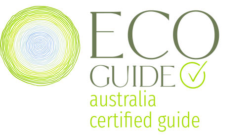

In Australia, tag-along tour guides are not required to be accredited. Therefore, we think it’s important you know that all of our guides are Savannah Guides accredited, EcoGuide Australia accredited, and have a Cert IV in Training and Assessment in 4WD Instruction. In addition to this, our business is the only tag-along tour operator in Australia approved under the Savannah Guides Enterprise accreditation scheme.
When you choose us to take you on a tour through remote parts of the country, you can be assured that you will be in the best possible hands. Our guides are among the most highly trained and experienced in Australia, and our business is supported by the most respected tour guide associations in the country.



FOLLOW US ON FACEBOOK & INSTAGRAM!